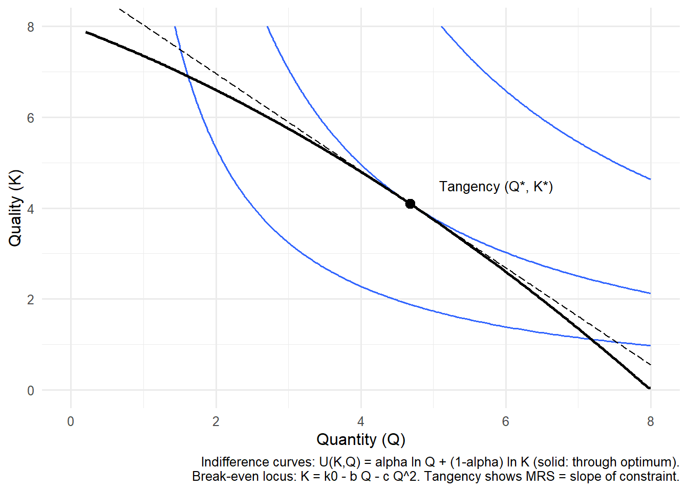

This post will discuss the theory and contributions of Newhouse’s 1970 model of nonprofit hospitals which can be found here I started reading up on this model after looking at the behavior of substance use disorder (SUD) treatment centers (TCs). You can see more about that in my TC Ownership series. This is also part of an overarching — and building —- interest of mine: the non-profit healthcare institution. I’ve found myself revisiting Sloan’s chapter in the Handbook of Health Economics.
I’m going to run through some quick motivation then go ahead and introduce/solve the model here. The Newhouse model was one of the first models of overall non-profits. It is much more simple to develop a model of for-profit firms, or even social planners or the individual, because the objective function of these agents is much more clear. For-profits maximize profit (duh), social planners might be trying to maximize tax revenue or the utility of all citizens and individuals maximize their own utility.
The Newhouse model differed in two main ways: first, a strong insight from this model is that the non-profit decision maker (DM) maximizes their utility over some quality-quantity measure. In his paper, Newhouse describes the motivation of the DM in regard to quantity by making the case that society is better off with increased consumption of hospital services, and so an altruistic DM clearly wants to increase overall consumption. Newhouse has this to say about why quality is in the maximand:
To understand why the second element, quality, belongs in the maximand, it is necessary to examine the locus of decision making in a hospital. One characteristic of nonprofit hospitals is that usually control formally resides in a board of trustees or similar group. The board in turn appoints an administrator who is in charge of day-to-day decisions…… If the administrator is not to make a ‘profit,’ his performance cannot be judged by the profit criterion. Therefore, his salary and promotional chances must be a function of some other variable or variables. It seems plausible to assume that the prestige of the institution is prominent among these other variable…… Prestige, in turn, is affected by the size of the institution, but probably even more by the quality of the product produced.
Newhouse goes on to discuss the medical staff’s role in maintaining a high level of quality as well. The issue then becomes how these two aspects of the maximand — quantity and quality of provided services — are weighted and measured. Solving the model from the perspective of the hospital administrator helps us answer this question.
2 Assumptions of the Model
We start off assuming that there exists a total cost function \(F\) of quantity supplied \(Q^s\) and quality supplied \(K^s\).
\[
TC = F(Q^s, K^s)
\tag{1}\]
We also assume there is a function \(G\) of quantity demanded, as a function of price (given) \(P\) and quality demanded \(K^P\)
We assume that non-profit firms make zero profit, thus \(\pi = 0 \iff TR = TC\). Since \(TC = AC\*Q \iff AC = F / Q = f (Q^s, K^s)\)and $ TR = P Q$ (abusing notation of quantity and quality before establishing equilibrium conditions, sorry), and further assuming that we can solve for an inverse demand function \(P = g(Q^d, K)\), we have the setup for the breakevn condition which will allow us to solve for quantity as a function of price.
In particular, we have:
\[
\begin{aligned}
AC &= f(Q^s, K^s) \\
P &= g(Q^d, K^d) \\
Q^d &= Q^s = Q \\
K^d &= K^s = K \\
P &= AC
\end{aligned}
\tag{2}\]
which allows us to obtain equlibrium quality as a function of equilibrium quantity:
\[ K = h(Q)\] This sets up the maximization problem, where both quality and quantity are part of the DM problem, and we can solve for them both assuming we havethe quantity-quality tradeoff.
3 DM Problem
The hospital administrator choose \(K\) and \(Q\) to maximizes the institutions utility. We subject this to the quantity-quality tradeoff which builds in the zero-profit/break-even condition already.
Newhouse discusses some concavity conditions to ensure an interior solution, mostly some second-order conditions.
4 Implications
The optimality condition tells us that the MRS of quantity and quality is equal to the slope of the break-even condition. In economic terms, this condition means the administrator will expand quantity up to the point where the value of treating one more patient (in utility terms) is exactly offset by the reduction in quality that must occur to remain at break-even.
If the break-even locus is steep (large (h’(Q))), then each additional patient requires a substantial reduction in quality, so the hospital leans toward protecting quality. If the locus is relatively flat, the hospital can expand patient volume with only modest quality sacrifices, so output increases. This helps explain observed nonprofit hospital behavior: rather than maximizing profit or output alone, they balance prestige- and reputation-enhancing quality with the social goal of treating more patients.
Newhouse argued this framework accounts for investments in high-cost technology, the provision of uncompensated care, and other behaviors that appear puzzling under a pure profit-maximization model but are consistent with a utility-maximizing nonprofit decision maker.
I had Chat-GPT compare how this might look, the first image is basically just what you would typically think of in a utility maximization problem but with different labels, the
Code
library(ggplot2)library(dplyr)library(tibble)# ---- Parameters (tweak to taste) ----k0 <-8# base quality intercept of break-evenb <-0.6# linear cost/demand pressure on quality as Q increasesc <-0.05# curvature of break-even; >0 makes the locus get steeper in Qalpha <-0.55# weight on Q in utility U(K,Q) = alpha*ln(Q) + (1-alpha)*ln(K)# ---- Functions ----h <-function(Q) k0 - b*Q - c*Q^2# break-even locus: K as fn of Qhdash <-function(Q) -b -2*c*Q # slope dK/dQ of break-evenUfun <-function(Q,K) alpha*log(Q) + (1-alpha)*log(K)# MRS = -U_Q/U_K = -(alpha/Q)/((1-alpha)/K) = - (alpha/(1-alpha)) * (K/Q)MRS <-function(Q,K) - (alpha/(1-alpha)) * (K/Q)# ---- Tangency (solve MRS = h'(Q) along K = h(Q)) ----# Condition: - (alpha/(1-alpha)) * (h(Q)/Q) = hdash(Q)# Rearranged root condition: h(Q) - ((1-alpha)/alpha) * Q * (b + 2*c*Q) = 0root_fn <-function(Q) h(Q) - ((1-alpha)/alpha) * Q * (b +2*c*Q)# search interval where K>0 and Q>0; adjust if neededQ_star <-uniroot(root_fn, interval =c(0.2, 8))$rootK_star <-h(Q_star)U_star <-Ufun(Q_star, K_star)# ---- Data for plotting ----Q_grid <-seq(0.2, 8, length.out =400)df <-tibble(Q = Q_grid,K =pmax(h(Q_grid), 0.05) # keep K positive for log utility) %>%filter(K >0)# Utility levels for indifference curves (one through the tangency, ± offsets)u_levels <-c(U_star -0.35, U_star, U_star +0.35)# Make a grid for contoursQ_seq <-seq(0.2, 8, length.out =200)K_seq <-seq(0.2, 8, length.out =200)grid <-expand.grid(Q = Q_seq, K = K_seq) %>%mutate(U =Ufun(Q, K))# ---- Optional: tangent line at (Q*,K*) to visualize tangency ----slope_tan <-hdash(Q_star) # dK/dQ at the tangencyK_tan <-function(Q) K_star + slope_tan*(Q - Q_star)tan_df <-tibble(Q = Q_grid, K =K_tan(Q_grid)) %>%filter(K >0)# ---- Plot ----ggplot() +# Indifference curves (three levels)geom_contour(data = grid, aes(Q, K, z = U), breaks = u_levels, linewidth =0.6) +# Break-even locusgeom_line(data = df, aes(Q, K), linewidth =1) +# Tangency pointgeom_point(aes(Q_star, K_star), size =3) +# Tangent line at the optimumgeom_line(data = tan_df, aes(Q, K), linewidth =0.4, linetype ="longdash") +annotate("text", x = Q_star +0.4, y = K_star +0.4,label ="Tangency (Q*, K*)", hjust =0, size =3.5) +labs(x ="Quantity (Q)", y ="Quality (K)",caption ="Indifference curves: U(K,Q) = alpha ln Q + (1-alpha) ln K (solid: through optimum).\nBreak-even locus: K = k0 - b Q - c Q^2. Tangency shows MRS = slope of constraint.") +coord_cartesian(xlim =c(0, 8), ylim =c(0, 8)) +theme_minimal(base_size =12)

Newhouse choice: the DM picks (Q, K) where the indifference curve is tangent to the break-even locus K = h(Q).
Flat vs. steep break-even loci. Example: When the break-even curve is flatter (left), the nonprofit administrator can expand patient quantity with only modest reductions in quality—think of a community hospital adding beds without cutting staff ratios too sharply. When the curve is steeper (right), each additional patient sharply reduces quality—like a facility where adding beds quickly overwhelms nursing staff—so the nonprofit limits patient volume to preserve care quality.
5 Extension and Relevance to Treatment Centers
The question for myself, now, is whether or not this truly applies to treatment centers? What comes to mind are the sort of luxury spa-esque TCs, very high quality with low output. Newhouse’s model does seem to predict these sorts of cases. A possible extension to review is Pauly & Redisch’s The Non-For-Profit Hospital as a Physicians’ Cooperative. This paper may be interesting to review in light of the many opioid prescribing papers in health econ literature.
It also brings to mind how we might measure quality. SAMHSA keeps track of service offerings for each TC. Would we consider TCs with a high level of quality those who offer tons of services, or is that a high-quantity TC with possibly low quality in each of these areas? Are TCs that have a high availability of MAT lower quality, since they treat so many individuals? This also ties into the idea of how we might measure treatment itself; in all of this work, I consistently combine different types of treatment, but the heterogeneity of TC characteristics is certainly important to consider.
Regardless, I’m thankful for Newhouse’s contribution — the quantity-quality tradeoff and the model that spurred much work — for allowing me to think of these questions.